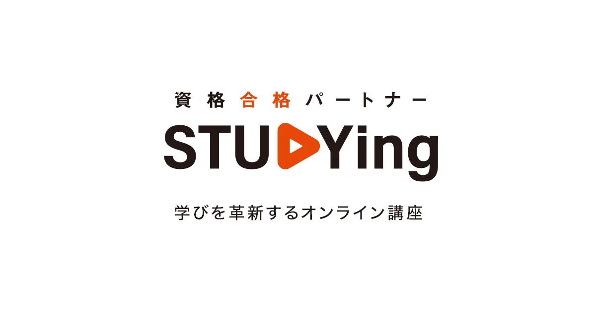
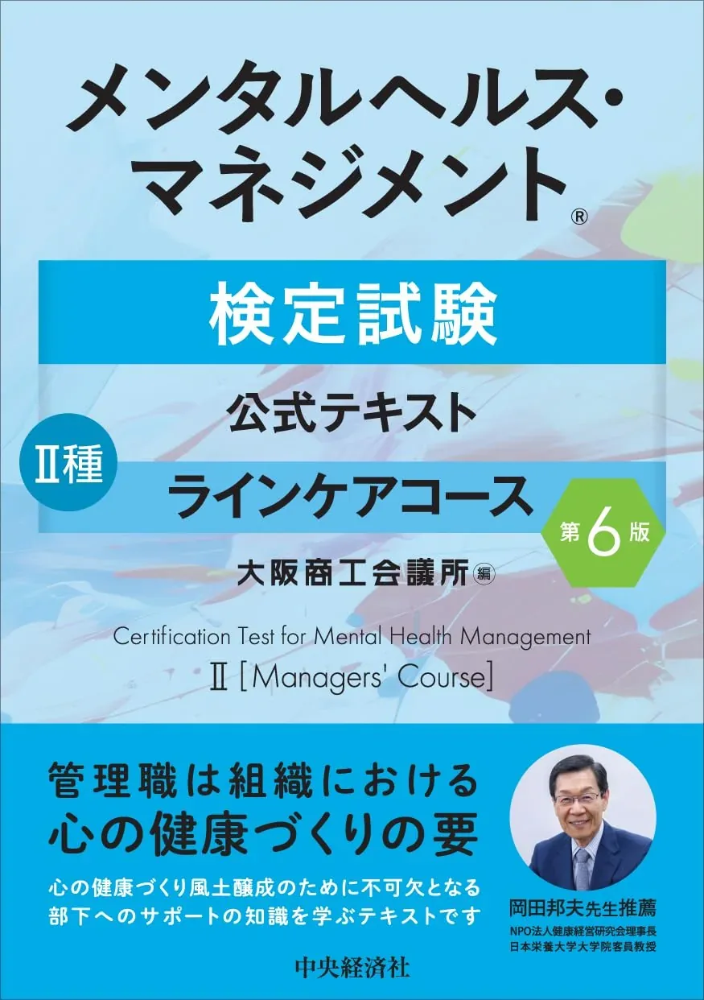

メンタルヘルス・マネジメント検定II種のオンライン講座比較【動画・2027年度版】
メンタルヘルス・マネジメント検定II種のオンライン講座は、動画で7領域を整理しつつ演習量を確保したい独学者に向いています。テキストだけでは進めにくい人の補助としても役立ちます。この記事では、動画中心の3講座を対象・料金・独学との併用の観点で比較します。料金はキャンペーンや改定で変わるため、各公式ページで最新を確認してください。
この記事の信頼性について
| 執筆 | メンタルヘルス二種マスター編集部（資格学習サイトの編集チーム） |
|---|---|
| 確認 | 公式情報確認担当（公開前に一次情報・販売ページと照合する担当者） |
| 事実確認日 | 2026-11-13 |
| 主な参照元 |
1オンライン講座が向いている人
オンライン講座は、動画で学びたい人に向いています。テキストを読み進めるのが苦手な人の助けになります。
講座が向いているのは次のような人です。
- 活字より動画で理解を進めたい
- スキマ時間にスマホで学習したい
- 独学の計画づくりに不安がある
II種は独学でも合格を狙える試験ですが、進め方に迷う人には講座が補助になります。一方で、費用はテキストより高くなります。まず独学で始め、つまずいたら講座を取り入れる、という使い方も現実的です。
オンライン講座3選（比較）
受講料・キャンペーンは各公式ページで必ず最新情報を確認してください。
| 順位 | 講座名 | 料金（参考） | 学習期間 | 向いている人 |
|---|---|---|---|---|
| 1 | メンタルヘルス・マネジメント検定Ⅱ種合格コース 2027年度試験対応 | ¥26,800（一括） | — | 動画中心でII種に特化して学びたい人 |
| 2 | メンタルヘルス・マネジメント検定Ⅱ種＋Ⅲ種ダブルチャレンジコース 2027年度試験対応 | ¥29,800（一括） | — | II種合格後にIII種まで視野に入れたい人 |
| 3 | メンタルヘルス・マネジメント検定II種ラインケア完全対策 | — | — | 買い切り動画で短時間に要点を押さえたい人 |

メンタルヘルス・マネジメント検定Ⅱ種合格コース 2027年度試験対応
- 2027年度対応のII種コース
- スマホ視聴しやすいオンライン学習
- 独学テキストとの併用向き

メンタルヘルス・マネジメント検定Ⅱ種＋Ⅲ種ダブルチャレンジコース 2027年度試験対応
- II種とIII種を連続で学べる
- 2027年度試験対応
- 通信講座比較記事と役割分担して選べる

メンタルヘルス・マネジメント検定II種ラインケア完全対策
- 動画講座でラインケア要点を学べる
- 通信講座より手軽に始めやすい
- テキスト第1周の補助教材にも使える
2スタディング II種合格コース
スタディングのII種合格コースは、動画中心でII種に特化した講座です。スマホで完結しやすい設計が特徴です。
特徴は次のとおりです。
- 動画と演習をオンラインで回せる
- スキマ時間に学習を進めやすい
- II種に絞って効率よく学べる
料金は執筆時点の税込参考で2万円台後半ですが、キャンペーンで変わることがあります。II種だけを動画でしっかり学びたい人に向いた選択肢です。最新の料金と内容は、必ず公式ページで確認してください。
3スタディング II種＋III種ダブルチャレンジ
ダブルチャレンジコースは、II種とIII種を一緒に学べる講座です。両方の取得を視野に入れる人に向いています。
特徴は次のとおりです。
- II種とIII種をまとめて学べる
- 併願や段階的な取得に対応しやすい
- 動画中心でスキマ時間に進めやすい
料金は執筆時点の税込参考で2万円台後半から3万円程度です。II種に合格した後、III種まで取りたい人に向いています。単独コースとの差額や内容は、公式ページで比較してから選んでください。
4Udemy の買い切り動画
Udemyの対策講座は、買い切り型の動画教材です。必要な部分だけ補強したい人に向いています。
特徴は次のとおりです。
- 買い切りで繰り返し視聴できる
- 要点を短時間で押さえやすい
- 独学の補助として取り入れやすい
料金はセール時に大きく変わるため、購入時の表示価格を確認してください。7領域すべてを体系的に学ぶというより、独学で手薄になった領域だけを動画で補う使い方が向いています。テキスト独学に動画の補強を足したい人の、手軽な選択肢になります。
5独学・テキストとの組み合わせ方
講座は、単独で使うより独学と組み合わせると効果的です。動画で全体像をつかみ、演習と復習で定着させます。
組み合わせの例は次のとおりです。
- 動画で7領域の流れを一気につかむ
- テキストや問題集で演習量を確保する
- 間違えた論点を動画で見直す
動画はインプットを速める一方、手を動かす演習は欠かせません。講座を取っても、過去問や一問一答での演習は並行して進めてください。動画と演習を往復すると、短い期間でも合計70点に届きやすくなります。
6独学·テキストとの併用
講座導入の順序は「テキスト1冊→演習計測→動画で弱点補強」です。9月の50問通しで70点未満が続く領域だけ動画を視聴し、それ以外は過去問解き直しに時間を配分してください。試験2週前からは新規講座コンテンツの追加を止め、誤答復習を優先します。週8時間を確保できている独学者は、講座なしでも70点ラインに届く場合が多いです。迷ったら通信講座比較記事で大学系通信との違いも併せて確認してください。
7よくある質問
独学と動画講座はどちらがよいですか？
II種単独コースとII＋IIIダブルはどちらを選ぶべきですか？
オンライン講座の料金はどれくらいですか？
記事の基本情報
| ジャンル | 独学対策 |
|---|---|
| タグ | 独学 / 教材 / 学習計画 |
公式情報の確認
公式情報の確認：メンタルヘルス・マネジメント検定II種の最新情報は、試験のご紹介（公式）などの公式情報を必ず確認してください。本人に割り当てられた試験会場は受験票の表記が正本です。